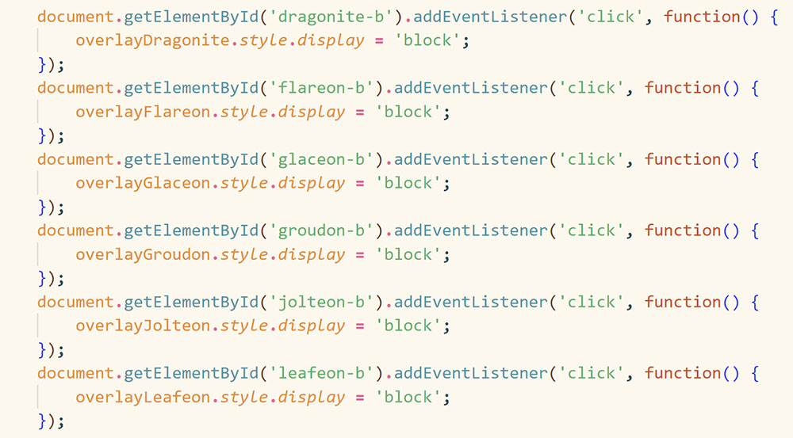
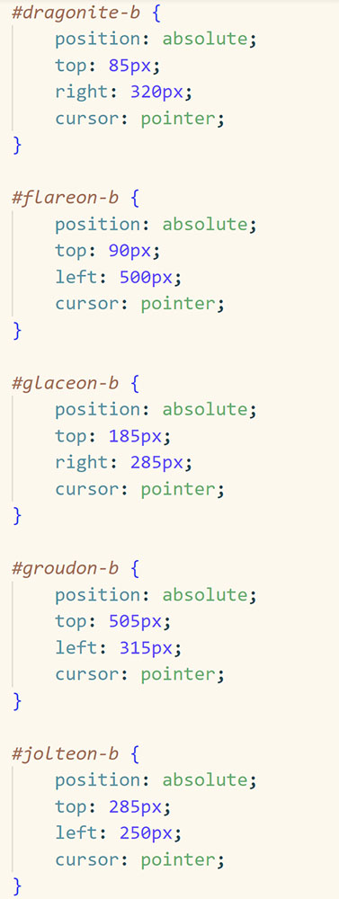

Review Part 1

Example of Repeated getElementByIds
My friend, David, was the first person I asked to help review my code. He is currently a software engineer at Audible and has experience in both frontend and backend. He’s also someone I often ask for coding advice while doing projects. While showing him my code, he commented on how all of the Pokemon I have could be stored into a list so it’d be a lot simpler to code. By doing so, the if statement could just be “if(pokemonList.includes(event.target)” He also remarked how in lines 20 to 36, I could just make the document.getElementById(...) elements into separate variables. He made a lot of comments on how the code could be a lot simpler if I used a list. If I had a list for the Pokemon nanoblocks, I could just loop through the list to add event listeners.
Review Part 2

Example of Repeated Positions and Cursors
Another friend I asked to help review my code is Julia. She currently works at Scale AI as a machine-learning research engineer, but prior to this, she had four years of software engineering experience in both frontend and backend from interning at a lot of major companies, such as Roblox, Snapchat, and Meta. My discussions with Julia surrounded the code, but she also gave me more ideas on the design of the project. She mentioned how all the overlays are the same, with only the images and text being different, so she recommended making a javascript that could generate the html code for me, and including “dictionary” in the code, so that it will get the right info for me about a specific Pokemon. With that, I could take out the repetitive code. She made a lot of comments on how my code was really repetitive. And so she suggested that in the pokeball style, I had position: absolute and cursor: pointer for all of them. So I could just make a separate class with the two attributes and just apply them to all the pokeballs. One new idea that she had was that I could try to make the pokeball location random with the javascript, rather than having them just be at the same spots all the time.